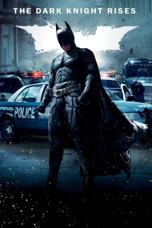

#715 Batman 3 - The Dark Knight Rises
 
 IMDB-Wertung: 8.4 / 10
IMDB-Wertung: 8.4 / 10  IMDB-TOP-Platzierung: 68
IMDB-TOP-Platzierung: 68  Metascore: 78
Metascore: 78 
Nach dem Tod des Staatsanwalts Harvey Dent alias Two-Face nahm Batman die Schuld von dessen Verbrechen auf sich, um seinen Ruf zu schützen. Daher wurde er von dem Gotham City Police Department gejagt und verließ die Stadt. Die Handlung des Films setzt acht Jahre nach den Ereignissen von The Dark Knight ein. Nachdem der bemerkbar gealterte Batman nach Gotham zurückkehrt, muss er die Wahrheit der geheimnisvollen Selina Kyle herausfinden und den Schurken Bane davon abhalten, Gotham zu zerstören
Jahr: 2012
Dauer: 164 Minuten
FSK: 12
Land: USA Studio: Warner Bros.Tonspuren: DTS - ,
Untertitel: Deutsch, Englisch,
Auflösung: 1080p (1920x1080) Größe: 14540 MB
Genre: Action, Thriller
Regisseur:  Christopher Nolan
Christopher Nolan
Drehbuch: Jonathan Nolan, Christopher Nolan, Christopher Nolan, David S. Goyer, Bob Kane
Soundtrack: Hans Zimmer
Darsteller:
Datei: X:\Comic-Filme\Batman\Batman 3 - The Dark Knight Rises (2012, FSK12, 1920x1080).mkv seit 16.03.2015
Festplatte: Comicverfilmungen+MusikCD
 Es gibt insgesamt 13 Filme in der Gruppe 'Comic-Filme\Batman'
Es gibt insgesamt 13 Filme in der Gruppe 'Comic-Filme\Batman'